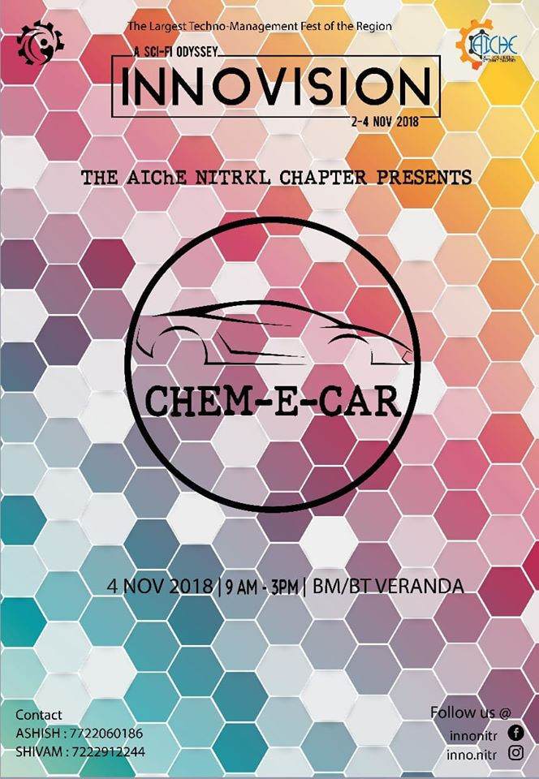

AIChE at INNOVISION
Events in 2019

Chem-E-Car 2.0
It's an international flagship event of AIChE, engaging students in designing a car powered exclusively by a chemical reaction.CHEM-E-CAR recipe-
1) A dashing silhoutte.
2) A pint of chemicals
3) A touch of science
4) Aloads of engineering
5) (and maybe) a smudge of luck...
Viola! Your chemical driven ride is ready.
But this is 2K19. The year of our 'chapter'. So ignite your cognitive engine fellas. This innovision , witness a plethora of even more enthralling ideas, concepts and experiences with AIChE NITR. Join us in another spell of chem-e-car competition with boosted endurance and thrill. Come, ride with us to experience the power of nature and engineering.
Game of Chems
Do you enjoy partaking in events that challenge your technically inclined minds?Innovision, the annual Techno-management fest of NIT Rourkela witnessed fun events of diverse kinds this year. However, one of the most eye-catching and one-of-a-kind event was present by AIChE NIT Rourkela Student Chapter, named the GAME OF CHEMS. This event, aimed at challenging the technically inclined minds consisted of multiple fun and engaging rounds such as mute compound, code-decode, name reaction etc. that kept its participants enthralled throughout. In its very first edition, this event managed to gather a participation of over 220 students, thus becoming one of the most successful debutants in the plethora of fun events. AIChE NITR Student Chapter is proud to have Archies, Rourkela as its title partner and Abi’s Kitchen and Fastech Fashion as its associate partner, for the successful conduction of the event.
Excited much? Well, we assure you much more
Maneuver 3.0
DING DONG!Are you willing to witness an event combined with adventures and the application of knowledge?
Then hold your breath a bit and get ready to experience MANEUVER 3.0, brought to you by AIChE NITR Student Chapter this INNOVISION, packed with six hours of chemistry, quizzing and truckloads of fun.
The onset of Innovision 2019 witnessed some of the most exuberant events, presented by AIChE NIT Rourkela Student Chapter. One such magnificent event was Maneuver 3.0, packed with six hours of chemistry, quizzing and truckloads of fun. The third edition of this adventurous event engaged a participation of over 280 students, and was cherished by each one of them. The student coordinators, as well as the volunteers were applauded for their efforts, while they await to come up with a better experience each year! AIChE NITR Student Chapter is proud to have Archies, Rourkela as its title partner and Abi’s Kitchen and Fastech Fashion as its associate partner, for the successful conduction of the event.
Events in 2018

Chem-E Car
Chem-E-Car Competition is a perfect blend of Engineering, Science and Creativity. Chem E Car, also known as The Green Car runs via chemical reactions. This car is an embodiment to promote sustainable development anticipating for a Greener and Better future.Chem E Car is the flagship event of American Institute of Chemical Engineers ( AIChE) conducted every year at the Annual Student Conference. This Innovision AIChE NIT Rourkela Student Chapter brings to you the flagship event of AIChE in a miniature form. Teams with 4-5 members are invited to enroll themselves in the competition.
Mikado Of Acumen
Do you have an appetite for Quizzes? Or do you pride over your skill to solve Picture Riddles? Or do you think you are good at betting? Then Mikado of Acumen is the event for you. This Innovision, the NIT Rourkela student chapter of American Institute of Chemical Engineers presents to you Mikado of Acumen, a Fun cum Technical event layered with quizzes, crosswords, puzzles, picture riddles and many more with each level having it's own set of rules. Come in a group of 2-4 members and test your Acumen. Log onto www.innonitr.com and check out other details of the event.Maneuver 2.0
Does the very thought of a cryptic treasure hunt give you an adrenaline rush? Or do you think you have a penchant for quizzes? Or have you ever prided yourself in having a good general knowledge? Then Maneuver 2.0 is just the event for you.This Innovision, the NITR Chapter of American Institute of Chemical Engineers once again brings to you its popular technical-cum-fun event 'Maneuver.' Its a team event divided into three levels. Your team of 2-3 members has to clear all the three levels consisting of a quiz based on all fields of study, a Jeopardy round and finally a cryptic treasure hunt to be declared as the winner of Maneuver 2.0